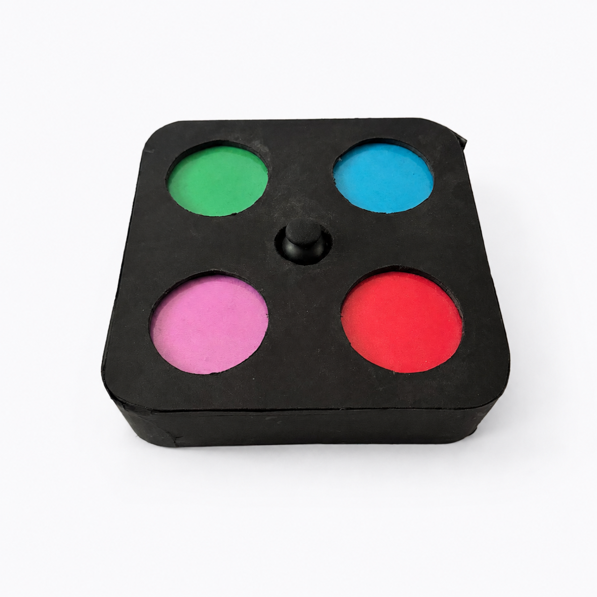
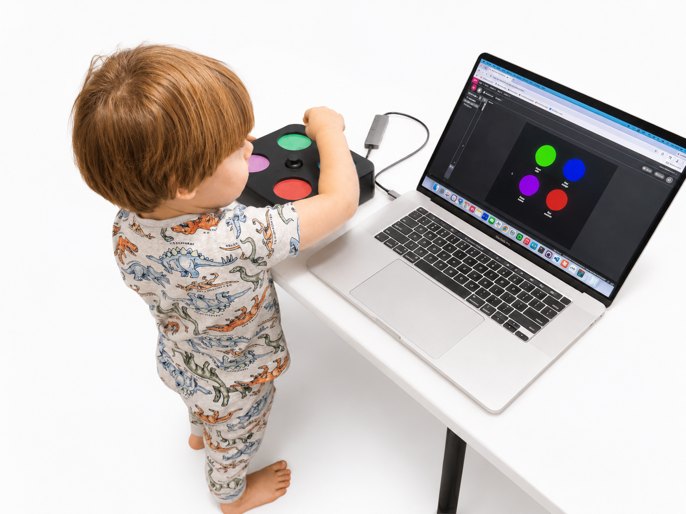
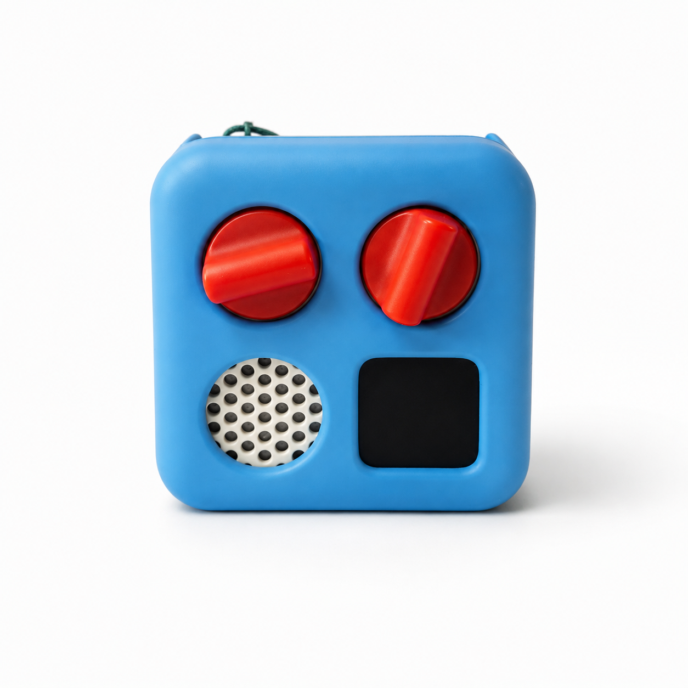
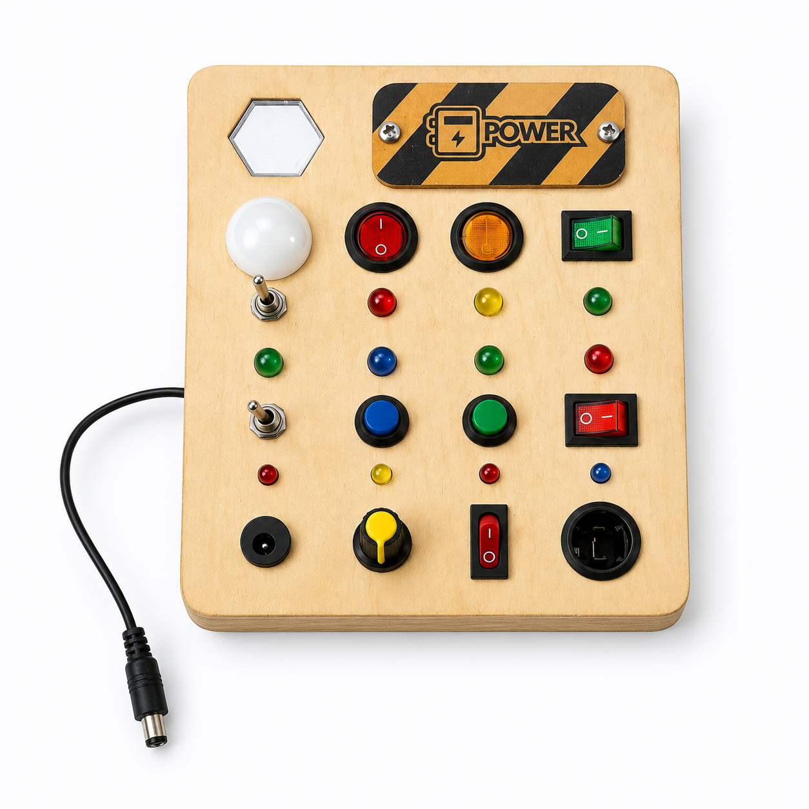
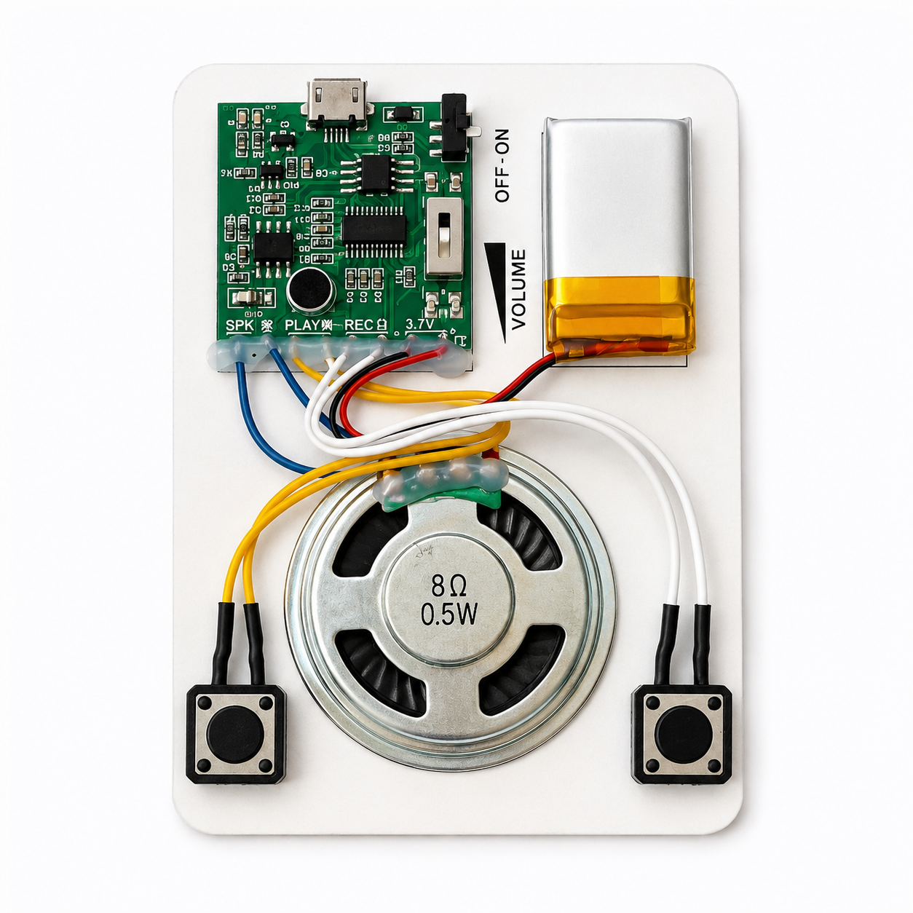
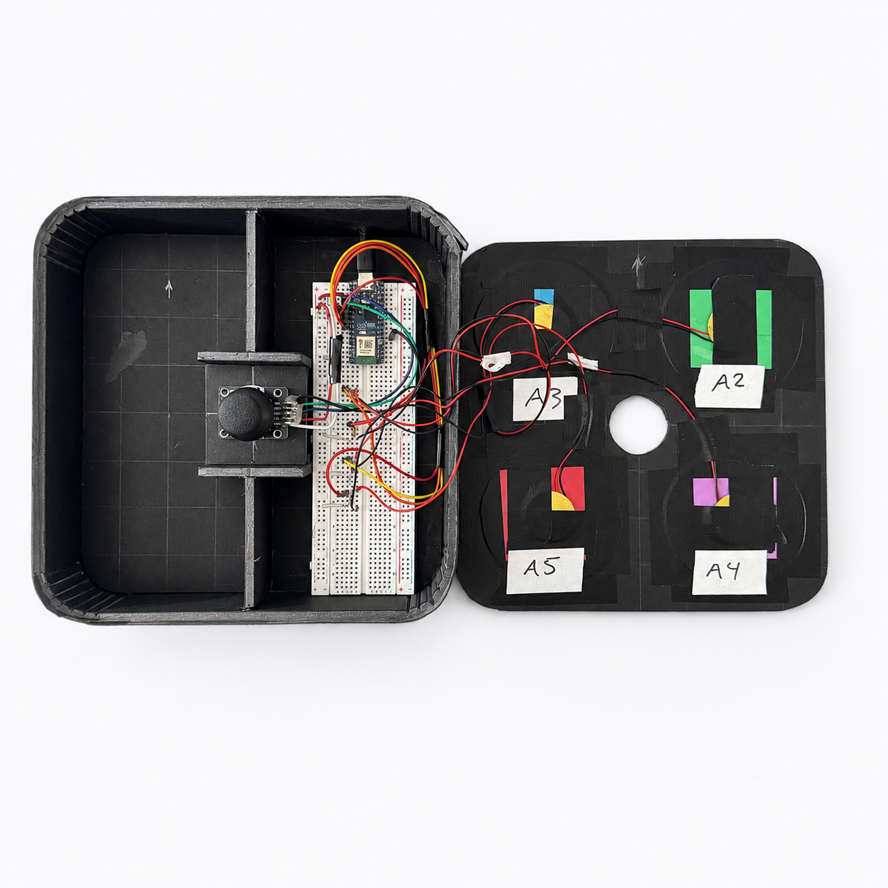
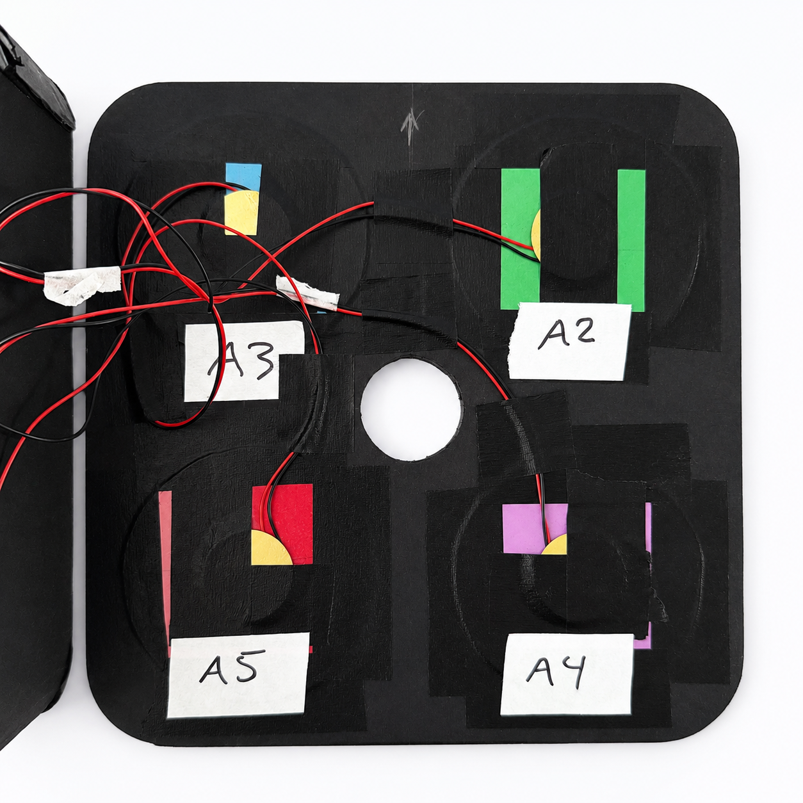
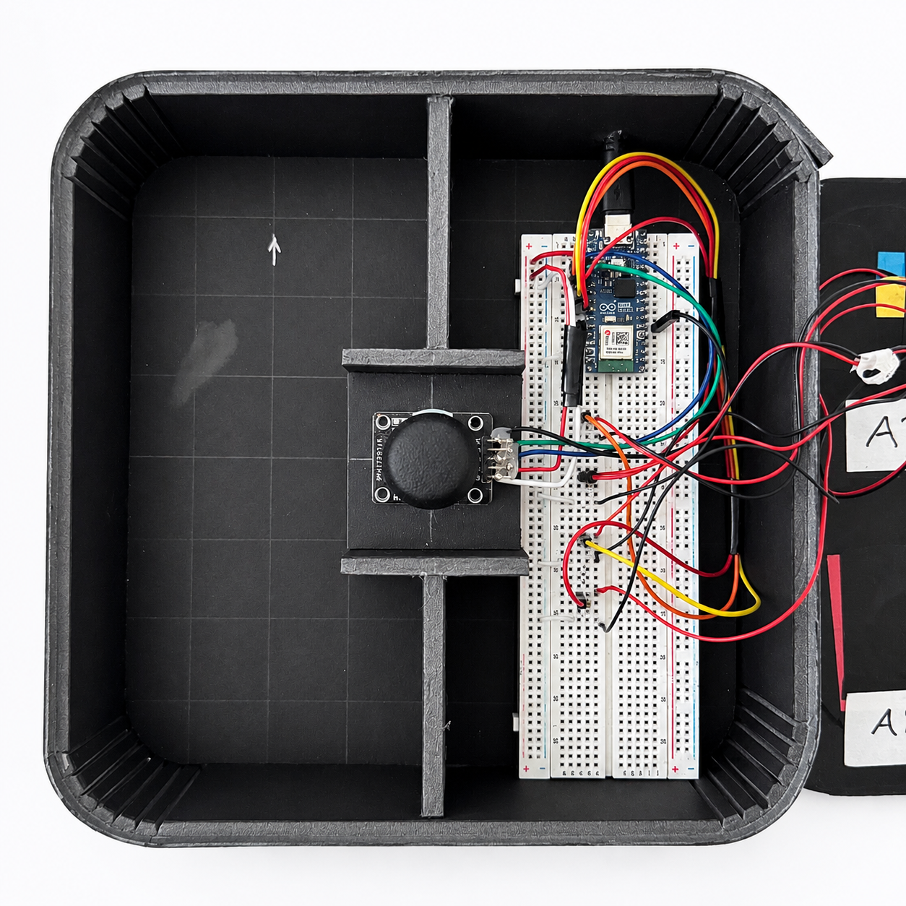

Photo — Version 1
An interactive screensaver for parents to use with their kids — one that turns a TV into a virtual biome explorer, built from foam core, piezos, a joystick, and a lot of iteration.

The Problem
As a parent, I wanted to stay genuinely present when playing with Henry — not just supervising. But I wanted to be engaged too, as a person, not just watching him have fun. Most alternatives to screens weren't engaging enough for either of us — and the alternatives to those alternatives were usually screens.
That sent me looking for a framework to define what "good" interactive play actually looks like. The E-AIMS model — engaging, active, meaningful, social — gave me a clearer target. My own takeaway from it: the closer an experience mirrors real-world interaction, the more of those four boxes it tends to check.
"Content is engaging, kids are actively involved, it feels meaningful — and it's social. So ideally, you or another family member is watching it with them."
— NPR, on the E-AIMS model for interactive media

Research + Discovery
I looked at what was already in our house: a Yoto Player, a Terra Busy Board. Research on learning environments pointed to tactile, exploratory materials that draw children's attention through physical interaction.
I'd also spent hours playing with Henry — enough to know that novelty wears off fast and physical interaction holds his attention longer than passive content.


A Cut Feature
That pointed me toward sensors and a microprocessor. I landed on a joystick and piezos as the core input system and started experimenting with form.
Early on, I also prototyped a voice element — a small recordable sound module so a sound could be captured and played back on demand. It worked, but it added a layer of complexity that didn't earn its keep next to the tactile interaction, so I cut it in favor of something simpler and more legible.

How It Works
To activate biome sounds: tap the corresponding colored circle on Biome Box to hear sounds; tap again to turn the sound off. To switch between biomes: press down on the joystick. You can turn ambient sound on or off once you're in a new biome.

The Color Mapping
The design solution was two-fold. First, the four colored circles on the box had to match the four colored circles on the UI exactly, with no labels. That forces a toddler to rely on color memory and on remembering what each image actually is — or to ask a parent. Either way, the parent stays in the loop. It's also the mapping Henry locked onto: he could look at the box and know which tap would trigger which card.

The Sound Design
Second, every image needed a sound matched as closely as I could find to the real thing. In the space biome, some of those came straight from NASA's YouTube channel — Earth, the Sun, the satellite. The alien, on the other hand, triggers the X-Files theme. Not exactly "real world," but Henry didn't seem to mind.

The Stack
The UI
Each biome background and card image was generated with Midjourney. Click the biome tabs or the cards on the left to explore — no Arduino required.
Key Feedback + Learnings
Users found the physical form factor engaging and comfortable. Keeping the input physical — not buried in a menu — was the right call, even once a screen entered the picture.
No one knew what the joystick did without trying it. Mapping needed to be more intuitive — or more legible in the UI.
The UI was still fairly abstract at midterm. Critique pushed two specific changes: give parents a way to change the sounds, and make the content itself more educational — not just decorative. It's also when I noticed the paper prototype wasn't yet following E-AIMS; the shift to biome-based content was how those real-world, analogous relationships came back in.
Henry's attention held longest when the interaction was physical and legible, but it still faded quickly once the novelty did — a depth problem the next version will need to solve.
Outcomes
The final Biome Box used 4 contact mics glued in a square pattern, an integrated joystick, and a foam core enclosure with laminated colored paper. The UI was rebuilt around biome imagery — giving Henry a real-world analogy to hold onto.
When he recognized the circles on the device matched the screen, something clicked. That moment — a physical thing mapping to something on screen — is what the E-AIMS framework asks for.
Next: Solve the depth problem. Novelty fades fast — the next version needs loops, progression, or surprise to hold attention past the first session.
Next Case Study
Pontifex →